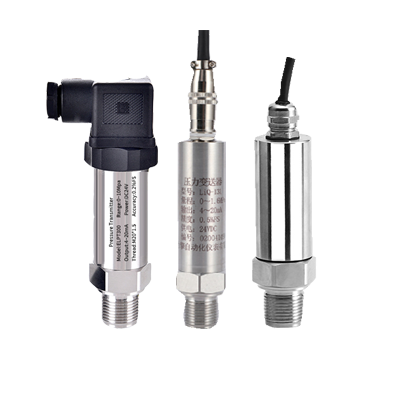

Qingke MEASUREMENT TECHNOLOGY
Reliable Measurement
for a Smarter World
Professional pressure, level, flow and temperature instruments for industrial automation and process control.
View Products →
◈ Industrial Grade Quality
◉ Reliable Measurement
⚙ OEM / ODM Solutions
◎ Global B2B Support
Industry Applications
Measurement solutions across critical industries
Why Choose Qingke
Your trusted industrial instrumentation partner
News & Technical Resources
Explore product knowledge and technical guidance
Need a reliable measurement solution?
Talk with our team about your requirements.